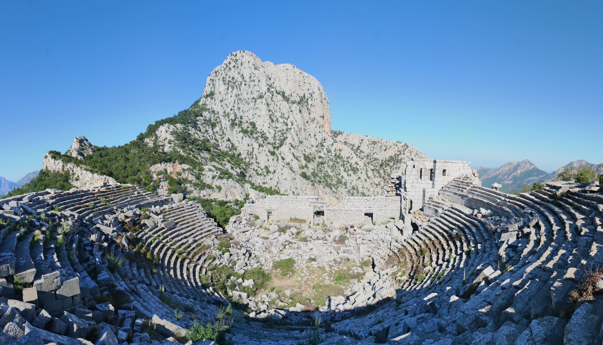
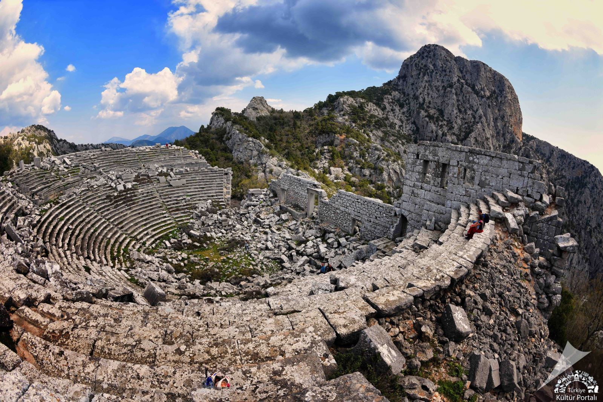
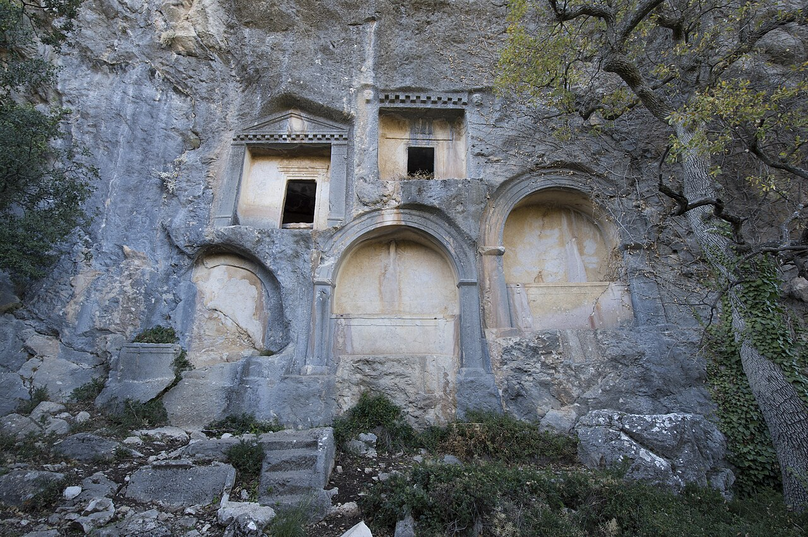

MİRASIMIZ
Termessos Antik Kenti

Termessos Antik Kenti, Pisidia Bölgesi'nin Milyas olarak anılan güneybatı bölümünde, bugün Güllük adını taşıyan Solymos Dağı’nın dorukları arasındaki vadide, Anadolu’nun en eski halklarından Luvilerin soyundan gelme Solymler tarafından kurulmuş önemli bir antik kenttir. Orman içinde korunan ören yerlerinin en çarpıcılarından biri olup, aynı adı taşıyan Milli Park içinde yer alır. Antalya-Korkuteli karayolunun 24'üncü kilometresinden sola tırmanan özel yolla, Güllük Dağı’ndaki kalıntılara ulaşılabilir.
Şehrin tarih sahnesine çıkışı Büyük İskender’in MÖ 333 yılında kenti kuşatması ve Termesosluların güçlü bir savunma yaparak kenti teslim etmemesiyle olmuştur. İskender’in ölümünden sonra kent Ptolemyler tarafından alınmıştır. MÖ 189 yılında komşu şehir İsinda’yı zapteden Termessos’lular İsinda halkının şikâyeti üzerine Anadolu’daki Roma Kuvvetleri Komutanı Manlius Vulso tarafından cezalandırılmışlardır. Büyük ihtimalle aynı tarihlerde Termessos ile Likya Birliği arasında bir savaş da söz konusuydu. MÖ 71 yılında Roma ile arasında “dostluk ve ittifak” bulunan Termessos’un işlerinde bağımsız olduğu ve kendi kanunlarını kendileri yapacakları konusu da Roma senatosunca kabul ve tasdik edilmiştir.

MÖ 36’dan 25’e kadar Galatialı Amyntas’ın Pisidya’nın diğer kentleriyle Termessos’u da yönettiği bilinmektedir. Roma İmparatorluk döneminde ise şehrin bağımsızlığını koruduğu bastığı sikkelerden anlaşılmaktadır. Şehrin Bizans döneminde ve sonraki devirlerdeki durumu hakkında hiçbir bilgi bulunmamaktadır.
Termessos kenti terk edildikten sonra yeni bir yerleşmeye tanık olmadığı gibi deprem ve doğal tahribin dışında oldukça sağlam ve iyi korunmuş ören yerlerinden biri olarak gösterilebilir. Şehrin kalıntıları Antalya-Korkuteli karayolu üzerindeki Yenicekahve yakınında bulunan Hellenistik Devir suru ile başlar ve Güllük Dağı'nın zirvesine kadar devam eder. Otoparktan sonra şehre tırmanan patika takip edildiğinde, sağ yanda İmparator Hadrian devrinde yapılmış İon düzenindeki tapınağın basamak ve anıtsal girişine rastlanır. Aşağı şehir surları ve su kaynağının bulunduğu alandan güneye doğru tırmanmaya devam edilirse, solda yer yer birinci katı ayakta kalmış Gymnasium’a ulaşılır. Birçok oda ve salondan oluşan yapının güneybatısında, arkalarında dükkânlar bulunan sütunlu cadde yer alır. Hemen yakınında kanalizasyon şebekesinin mükemmelliğini gösteren kanallar hala görülebilir. Düzlüğe çıkıldığında, orman gözetleme noktasına giden patikanın solunda şehrin birçok resmi yapısının bulunduğu alana ulaşılmış olur. Düzlükteki ilk kalıntı agoraya aittir. Batısındaki portiko veya stoa, II. Attalos zamanında (MÖ 159-138) inşa edilmiş olup Dor düzenindedir. Agoranın doğusunda, yamaca yaslanmış olan ve Antalya Körfezi’ni görebilen konumdaki tiyatro yer alır. Tiyatronun yaklaşık 100 metre güneybatısında çatı yüksekliğine kadar ayakta duran meclis binası bulunmaktadır. Agoranın doğusundaki düzlükte ise birbirine geçişli 5 adet sarnıç, derinlik ve genişlik açısından benzersizdir. Şehrin güneybatısında, Kurucunun Evi olarak adlandırılan Roma tipinde bir villanın kalıntıları yer alır. Cephe duvarı Dor düzeninde olan ve 6 metre yüksekliğe erişen yapı, kapısının sol tarafındaki kitabeden dolayı Kurucunun Evi adını almıştır.

Termessos, çok sayıda tapınağa ve çok geniş mezarlık alanlarına sahiptir. Mezarlarının çeşitliliği ve bezemeleri oldukça zengindir. Bunlardan Büyük İskender döneminin önemli komutanlarından Alketas’ın mezarı (MÖ 319) ve diğerleri şehir tarihine ışık tutmaları açısından da önemlidir. Anıtsal mezarların yanında çok sayıda savaşçılıklarını betimleyen kalkan motifli lahit, mezarlık alanında oldukça geniş bir yer kaplar. Antalya Müzesi’nde Termessos’a ait en ilginç eser Lahitler Salonunda sergilenen Köpek Lahdidir. Stefanos adlı köpeğe sahibesi tarafından yazılmış şiirsel kitabe benzersiz olmasıyla ayrı bir önem taşır.
Kaynak:"Termessos" Dünden Bugüne Antalya [II. Cilt], Antalya İl Kültür ve Turizm Müdürlüğü (2012)